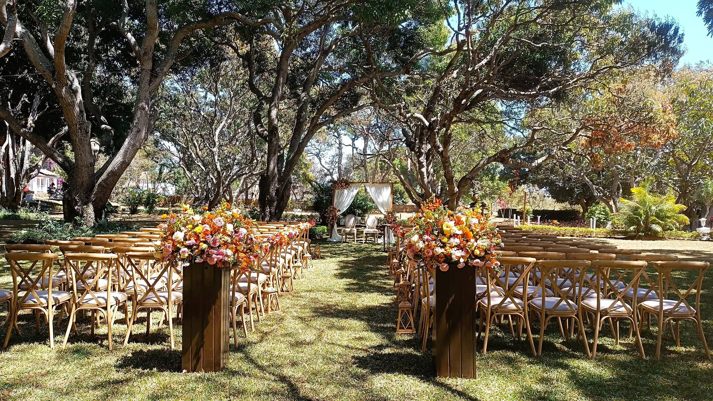
01
Célébrer
Mariages & moments de famille
Mariage, fiançailles, baptême ou anniversaire : composez une réception chaleureuse entre jardin, allée de cérémonie et espace couvert.
Imaginer votre journée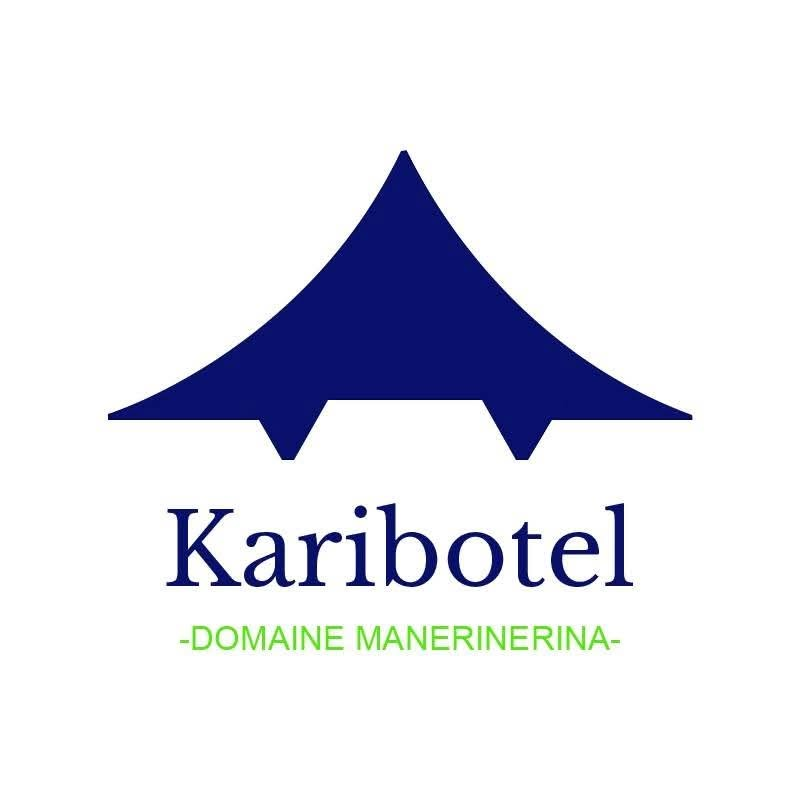
Demander une date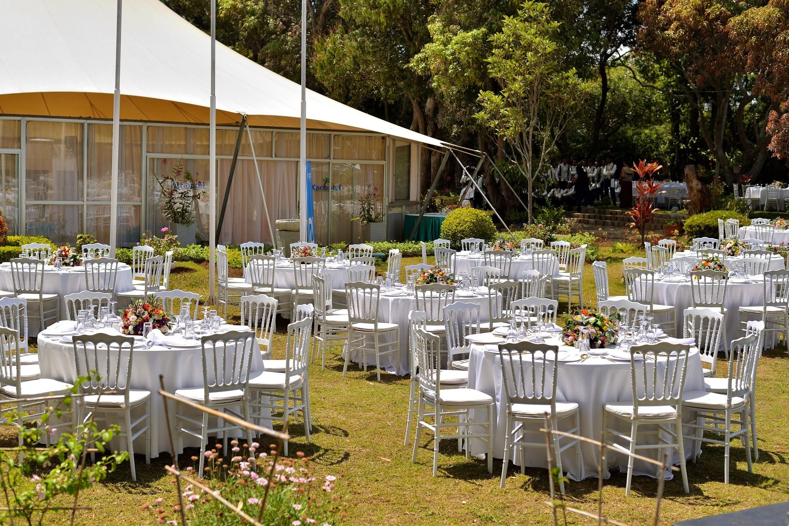
Lieu de réception champêtre · Ivato
À quelques instants d’Antananarivo, un domaine vivant où célébrer un mariage, réunir une famille ou offrir un grand bol d’air à vos équipes.
Un lieu, mille moments
Karibotel Domaine Manerinerina accueille les moments qui comptent dans un cadre champêtre à Ivato. Entre grands arbres, jardin, allée de cérémonie et chapiteau, chaque espace se transforme selon votre histoire.
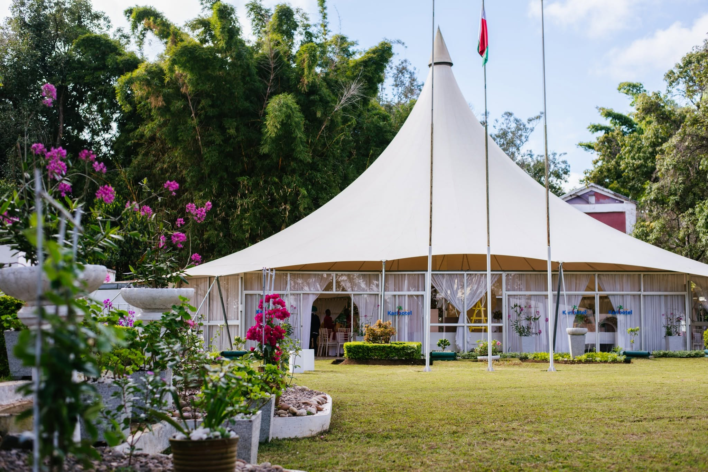
Recevoir autrement
Accueillez vos invités au jardin, installez votre cérémonie sous les arbres et poursuivez la fête dans l’espace couvert.
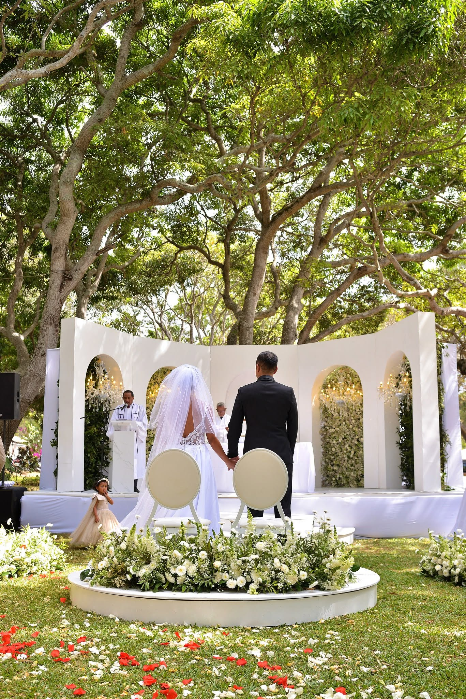
Une entrée à votre image,
dans un cadre vivant.
Privés & professionnels

Célébrer
Mariage, fiançailles, baptême ou anniversaire : composez une réception chaleureuse entre jardin, allée de cérémonie et espace couvert.
Imaginer votre journée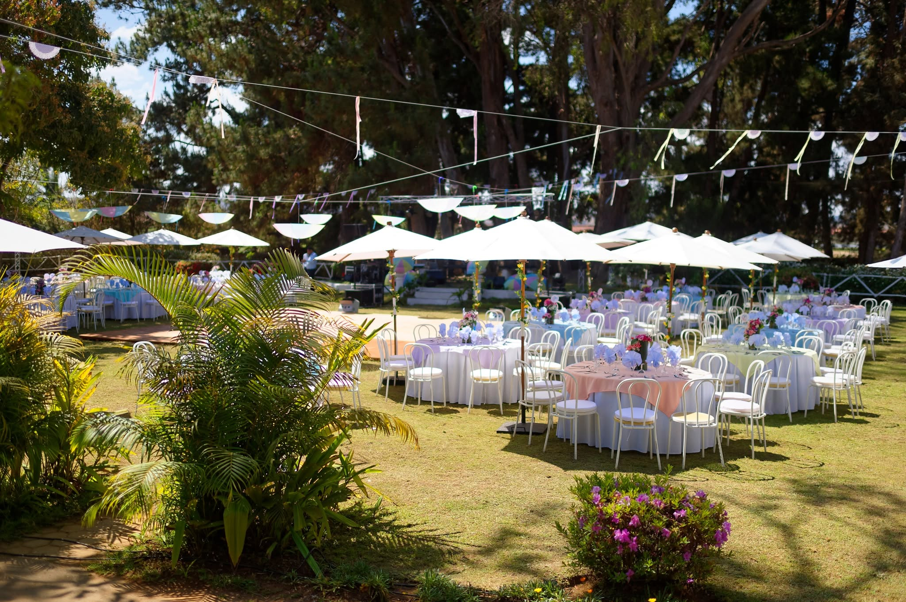
Rassembler
Offrez à vos équipes un changement d’air propice aux échanges, aux activités collectives et aux temps de convivialité.
Préparer votre événementÀ votre rythme
Visitez le domaine, parcourez ses espaces et imaginez votre mise en scène.
Partagez vos envies, votre format et vos prestataires pour construire une journée qui vous ressemble.
Le jour venu, retrouvez vos invités dans un cadre prêt à accueillir votre histoire.
Le domaine en images
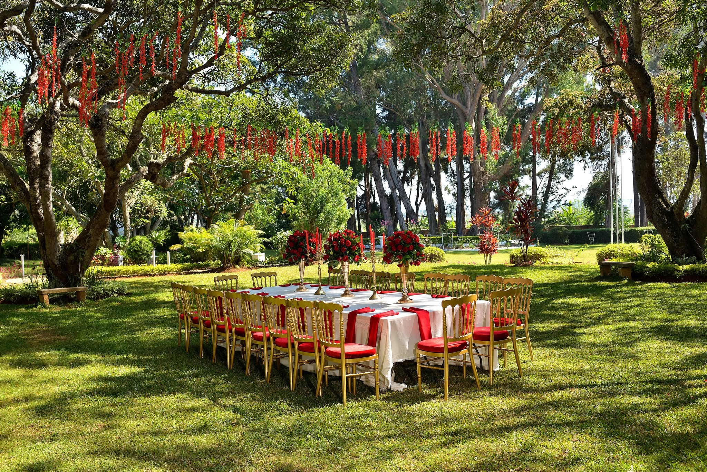
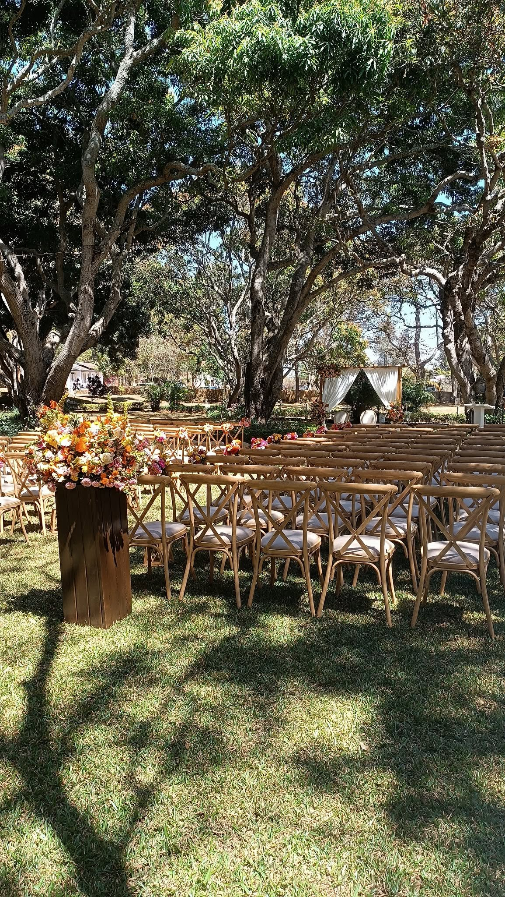
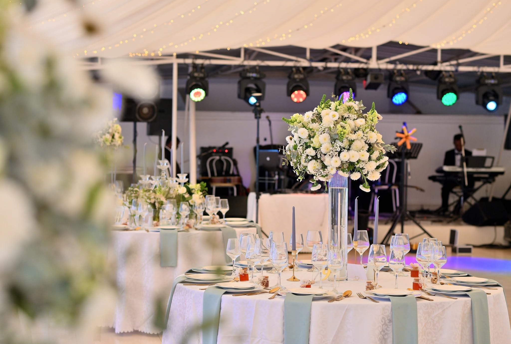
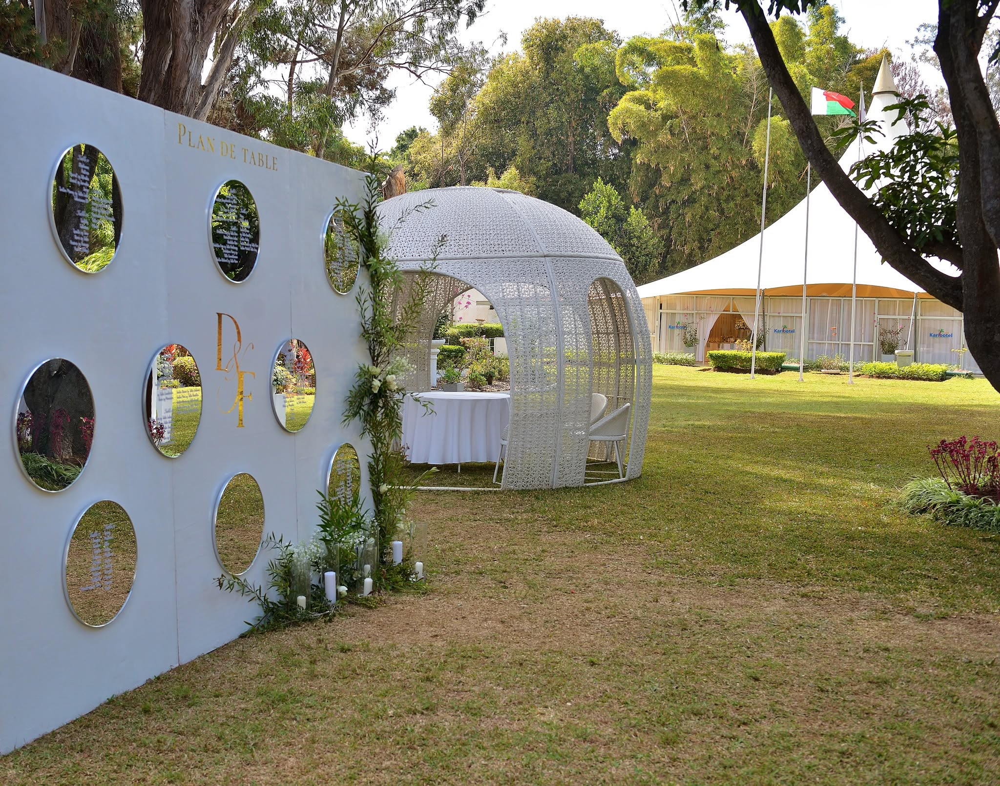
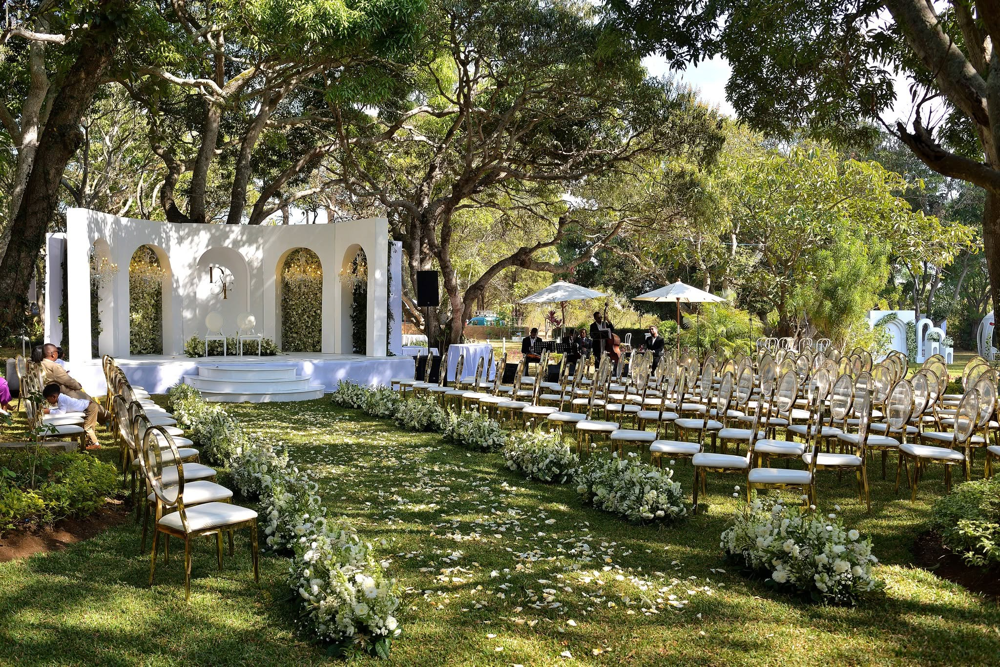
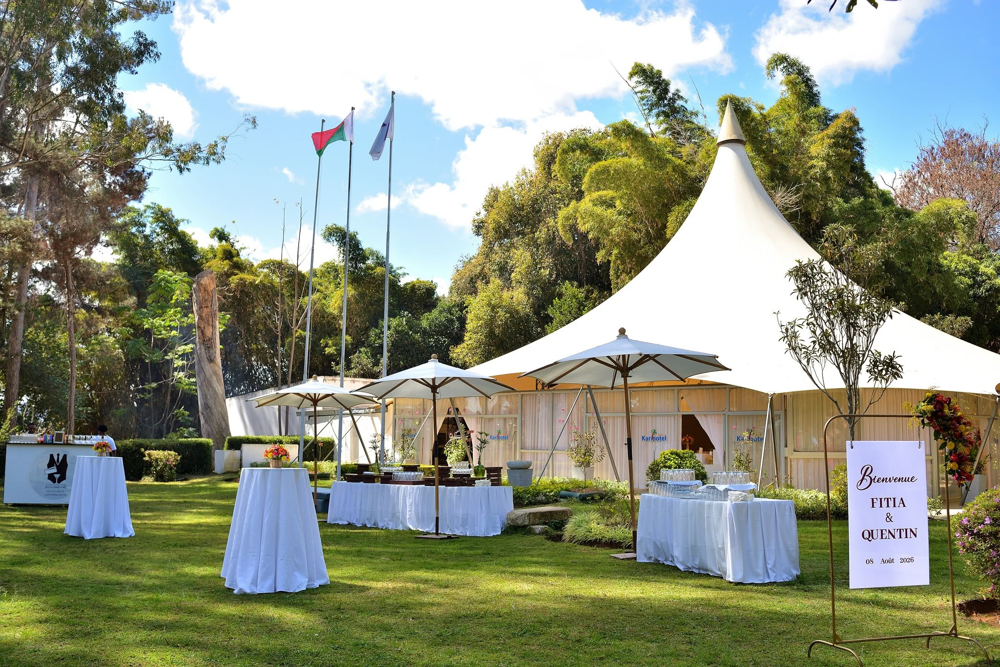
Votre date commence ici
Dites-nous ce que vous imaginez. L’équipe vous répondra avec les disponibilités et les informations adaptées à votre projet.
Antalamohitra
Ambohijanahary — Ivato
Antananarivo, Madagascar
Sur rendez-vous.
Contactez-nous pour organiser votre venue.